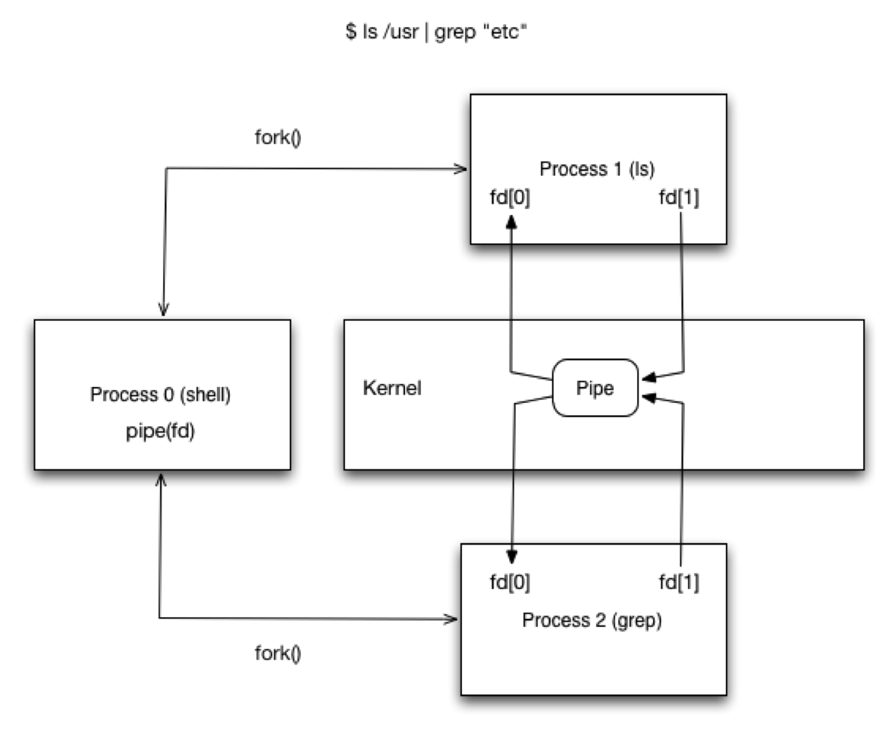

IPC Topics#
Interprocess communication, or IPC, is the set of mechanisms processes use to exchange data or coordinate activity. UNIX systems provide many IPC mechanisms because different programs need different tradeoffs among speed, structure, persistence, and portability.
The main IPC mechanisms covered here are pipes, named pipes, signals, shared memory, memory mapped files, files, UNIX domain sockets, Solaris doors, and TCP/IP sockets.
IPC Performance Hierarchy#
IPC mechanisms differ mostly in how much kernel involvement they need.
Shared memory and locks in shared memory are usually fastest after setup because ordinary reads and writes do not require a system call. Memory mapped files are also fast because they use the virtual memory system. Pipes, FIFOs, signals, and domain sockets require system calls and therefore context switches. Files and network sockets can be slower because they may involve filesystem or network activity.
Pipes#
A pipe is a half-duplex byte stream between related processes. Data flows in one direction, from the write end to the read end.
Pipes are among the oldest UNIX IPC mechanisms. A parent process creates
a pipe and then child processes inherit the pipe file descriptors across
fork(). Passing data through a pipe requires system calls, but pipes
are still fast enough for many command-line pipelines and process
coordination tasks.
Pipe Descriptors#
A pipe has two file descriptors: one for reading and one for writing.
On Linux, the call is:
int pipe(int pipefd[2]);
pipefd[0] is the read-only end. pipefd[1] is the write-only end.
On Windows, the comparable call is:
BOOL CreatePipe(
HANDLE readHandle,
HANDLE writeHandle,
LPSECURITY_ATTRIBUTES attr,
DWORD nSize);
The handles represent the read and write ends. The security attributes
control inheritance and permissions, and nSize gives a suggested
buffer size.
Pipe Example#
This local pipe example creates a pipe, forks, and redirects standard input and output through the pipe.
1#include <stdio.h>
2#include <unistd.h>
3#include <fcntl.h>
4#include <stdlib.h>
5
6int main(int argc, char* argv[]) {
7
8 int pipes[2];
9 pipe(pipes);
10
11 int inputPartOfPipe = pipes[0];
12 int outputPartOfPipe = pipes[1];
13
14 int pid = fork();
15
16 if(pid > 0) { //parent process
17 dup2(inputPartOfPipe, 0); // redirect STDIN
18 close(outputPartOfPipe); // close unused half of pipe
19 int value;
20 scanf("%d\n", &value);
21 printf("child sent value = %d\n", value);
22 } else if(pid == 0) { //child process
23 dup2(outputPartOfPipe, 1); // redirect STDOUT
24 close(inputPartOfPipe); // close unused half of pipe
25 printf("%d\n", 5000);
26 } else {
27 printf("fork failed!\n");
28 }
29
30 //don't worry about closing remaining pipes,
31 //process exit does this for us
32
33 return 0;
34}
Key points:
pipe(pipes)creates the read and write file descriptors.The parent redirects standard input to the read end with
dup2().The child redirects standard output to the write end with
dup2().Each process closes the pipe end it does not use.
The parent reads a value that the child wrote through standard output.
Fork and Pipe Example#
The systems-code-examples/fork_pipe example shows the same basic
pattern as a standalone submodule example.
1#include <stdio.h>
2#include <unistd.h>
3#include <fcntl.h>
4#include <stdlib.h>
5
6int main(int argc, char* argv[])
7{
8
9 int pipes[2];
10 pipe(pipes);
11
12 int inputPartOfPipe = pipes[0];
13 int outputPartOfPipe = pipes[1];
14
15 int pid = fork();
16
17 if(pid > 0) //parent process
18 {
19 dup2(inputPartOfPipe, 0); // redirect STDIN
20 close(outputPartOfPipe); // close unused half of pipe
21 int value;
22 scanf("%d\n", &value);
23 printf("child sent value = %d\n", value);
24 }
25 else if(pid == 0) //child process
26 {
27 dup2(outputPartOfPipe, 1); // redirect STDOUT
28 close(inputPartOfPipe); // close unused half of pipe
29 printf("%d\n", 5000);
30 }
31 else
32 {
33 printf("fork failed!\n");
34 }
35
36 //don't worry about closing remaining pipes,
37 //process exit does this for us
38
39 return 0;
40}
41
42
Key points:
The pipe is created before
fork()so both processes inherit it.The parent uses the read end of the pipe.
The child uses the write end of the pipe.
dup2()lets ordinaryscanf()andprintf()operate through the pipe.The example depends on the parent and child closing the unused pipe halves.
Pipes and Context Switches#
Pipe I/O crosses the user-kernel boundary. A write enters the kernel, the kernel buffers the data, and a read later copies the data into the receiving process.
{kind=link}

This extra copying and scheduling work is the cost of getting a simple kernel-managed byte stream.
Named Pipes and FIFOs#
A named pipe, or FIFO, is a pipe that has a name in the filesystem.
Named pipes differ from ordinary pipes in three useful ways. They live in the filesystem namespace, they can outlive the processes that use them, and normal filesystem permissions can control access to them.
Regular and Named Pipe Usage#
Ordinary shell pipelines use anonymous pipes:
$ cat file | gzip -c9 > file.gz
Named pipes make the pipe visible as a filesystem entry:
$ mkfifo pipe_file
$ gzip -c9 < pipe_file > file.gz
$ cat file > pipe_file
$ rm -f pipe_file
This pattern can adapt programs that expect files to a streaming data source.
Named Pipe Uses#
Named pipes are commonly used for local client-server designs and for adapting file-oriented programs to streaming input.
For example, a program that can only read from a local file can sometimes read from a FIFO while another process fetches, decrypts, decompresses, or generates the data. This works best for sequential I/O. It does not work well when the program needs random access.
Named Pipe Atomicity#
Writes to a pipe are atomic only up to a system-defined size.
If each write() call is no larger than PIPE_BUF, the writes are
atomic and are not interleaved with writes from other processes. If a
write is larger than PIPE_BUF, the kernel may split the write and
interleave it with other writers. A safe rule is to keep each logical
message at or below PIPE_BUF or provide a separate synchronization
mechanism.
Signals#
A signal is a software interrupt delivered to a process.
Signals are used for asynchronous events such as child termination, terminal interrupts, timers, broken pipes, and invalid memory accesses. Each signal has a disposition: ignore it, catch it with a handler, or use the default action.
Important Signals#
Many UNIX systems define more than thirty signals. The following table lists common ones used in systems programming.
Signal |
Description |
|---|---|
SIGABRT |
abnormal termination, generated by abort(). Default action terminates and may dump core. |
SIGALRM |
generated when a timer set by alarm() expires. |
SIGBUS |
hardware fault or memory access fault. |
SIGCHLD |
sent to a parent process when a child process terminates. |
SIGCONT |
sent to a stopped process when it is continued. |
SIGEMT |
general hardware fault on systems that define it. |
SIGFPE |
arithmetic exception, such as divide by zero. |
SIGHUP |
terminal disconnected or controlling session ended. |
SIGILL |
illegal instruction. |
SIGINT |
terminal interrupt, usually Ctrl-C. |
SIGKILL |
cannot be caught or ignored; kills the process. |
SIGPIPE |
write to a pipe whose reader has closed. |
SIGSEGV |
segmentation violation. |
SIGSTOP |
cannot be caught or ignored; stops the process. |
Handling Signals#
A process can register a handler for a catchable signal.
1static void handler(int);
2
3int main(int argv, char* argv[]) {
4 signal(SIGUSR1, handler);
5 signal(SIGINT, handler);
6 while(1) { pause(); }
7}
8
9static void handler(int signalNum) {
10 if(signalNum == SIGUSR1) {
11 printf("received SIGUSR1\n");
12 } else if(signalNum == SIGINT) {
13 printf("received SIGHUP\n");
14 }
15}
Key points:
signal()registers the handler forSIGUSR1andSIGINT.pause()blocks until a signal is caught.The handler receives the signal number and branches on it.
A real handler should only call async-signal-safe functions.
Sending Signals#
Signals can be sent from the shell with kill.
$ firefox &
[1] 5050
$ kill -USR1 5050
$ kill 5050
In C, kill(pid, signo) sends a signal to another process,
raise(signo) sends a signal to the current process, alarm(seconds)
sets a timer for SIGALRM, and pause() waits for a signal.
Interrupted System Calls#
A signal can interrupt a blocking system call.
Older UNIX systems could interrupt almost any blocking system call.
Modern systems still treat reads and writes on pipes, terminals, and
network devices as slow calls because they can block indefinitely. If a
signal handler runs while such a call is blocked, the call may return
with errno set to EINTR. Code that catches signals must be ready
to retry interrupted operations, unless sigaction() was configured
with SA_RESTART and the system call is restartable.
Reentrant Signal Handlers#
A signal handler interrupts whatever the process was doing at that
moment. The interrupted code might have been inside malloc(),
printf(), or another function with internal state.
For that reason, signal handlers must only call reentrant, async-signal
safe functions. System calls and low-level wrappers such as read(),
write(), close(), fork(), execve(), kill(), and
waitpid() are generally safe. Library functions that allocate memory
or use mutable static data are not safe in a signal handler.
Sleep with Alarm#
Early UNIX implementations used SIGALRM to implement sleep-like
behavior.
1 void sig_alrm(int signo)
2 {
3 /* ... */
4 }
5
6 unsigned int sleepFor(int numSeconds) {
7 signal(SIGALRM, sig_alrm); //set signal handler
8 alarm(numSeconds); //set alarm for n-seconds
9 pause(); //wait for signal
10 return alarm(0); //turn off alarm
11 handler;
12 }
Key points:
The function installs a
SIGALRMhandler.alarm(numSeconds)schedules a signal in the future.pause()waits until a signal is delivered.alarm(0)cancels any remaining alarm and returns unslept time.The race between
alarm()andpause()makes this style fragile.
Better Sleep with Longjmp#
One attempted improvement is to use setjmp() and longjmp() so
the signal handler can escape the interrupted wait.
1jmpbuf env_alrm;
2
3void sig_alrm(int signo) {
4 longjmp(env_alrm, 1);
5}
6
7unsinged int sleepFor(int numSeconds) {
8 signal(SIGALRM, sig_alrm);
9 if(setjmp(env_alrm) == 0) {
10 alarm(nsecs);
11 pause();
12 }
13 return alarm(0);
14}
Key points:
setjmp()records a return point before the process blocks.The signal handler calls
longjmp()to return to that point.This avoids some forms of blocking after the alarm fires.
Jumping out of a signal handler is still delicate.
sigsetjmp()andsiglongjmp()are safer choices when signal masks matter.
Signal Timing Problem#
Signal-based sleep code is difficult because one signal can interrupt another handler or arrive between two operations that looked adjacent in the source.
1void sig_int(int signo) {
2 volatile int j = 0;
3 printf("sig_int enter\n");
4 for(int i = 0; i < 10000000; i++) {
5 j += i * i;
6 }
7 printf("sig_int done\n");
8}
9
10int main(int argc, char* argv[]) {
11 signal(SIGINT, sig_int);
12 unsigned int unslept = sleepFor(1);
13 printf("sleepFor returned: %u\n", unslept);
14 return 0;
15}
16
Key points:
SIGINTruns a handler while the program is also usingsleepFor().The handler performs a long computation to make timing effects easier to observe.
The example shows why signal handlers should do as little work as possible.
Complicated signal interactions are a common source of subtle bugs.
Using Alarm for Time Limits#
alarm() can also place an upper time limit on a blocking operation.
For example, a process reading from a named pipe can set an alarm before
the read. If no writer appears, the signal interrupts the read and gives
the program a chance to recover. This pattern is useful, but it requires
careful handling of EINTR and careful signal-handler design.
Memory Mapped Files#
A memory mapped file maps a file into a process’s virtual address space. After setup, the program can read and write the mapped region with normal memory operations.
The file is the backing store for the mapped memory. If two processes map the same file with shared mappings, they can communicate by reading and writing the mapped bytes. Their virtual addresses may be different, so shared data structures must not depend on process-local pointer values.
Virtual Addressing in Mapped Files#
Memory mapped regions should use position-independent data layouts.
Pointers store virtual addresses, and the same mapped file can appear at different virtual addresses in different processes. Data stored in a mapped region should use fixed-size arrays, offsets, or indexes instead of raw pointers to process-local memory.
Absolute Memory Addressing#
This example stores pointers inside a structure.
1typedef struct {
2 char[50] Brand;
3 char[2] TractionRating;
4 char[2] SpeedRating;
5} Wheel;
6
7typedef struct {
8 Wheel*[4] Wheels;
9 char* Make;
10 char* Model;
11} Car;
12
13Car* car = (Car*)malloc(sizeof(Car));
14car.Make = (char*)malloc(sizeof(char)*50);
15car.Model = (char*)malloc(sizeof(char)*50);
16car.Wheels[0] = (Wheel*)malloc(sizeof(Wheel));
17car.Wheels[1] = (Wheel*)malloc(sizeof(Wheel));
18car.Wheels[2] = (Wheel*)malloc(sizeof(Wheel));
19car.Wheels[3] = (Wheel*)malloc(sizeof(Wheel));
20
21car.Wheels[1]->Brand
Key points:
Carstores pointers toWheelobjects.The wheel objects are allocated separately from the
Carobject.The pointer values are meaningful only in the process that created them.
This layout is not suitable for sharing through a mapped file.
Relative Memory Addressing#
This example stores the related objects inside one contiguous structure.
1typedef struct {
2 char[50] Brand;
3 char[2] TractionRating;
4 char[2] SpeedRating;
5} Wheel;
6
7typedef struct {
8 Wheel[4] Wheels;
9 char[50] Make;
10 char[50] Model;
11} Car;
12
13Car* car = (Car*)malloc(sizeof(Car));
Key points:
Carcontains the wheel array directly.MakeandModelare fixed-size arrays inside the same object.The data can be interpreted relative to the start of the mapped region.
This layout is much more suitable for memory mapped IPC.
Using mmap#
The basic mmap() pattern is to create a file, size it, map it, and
then treat the mapped region as memory.
The producer process creates and writes the mapped file.
1int main(int argc, char* argv[]) {
2 const char *data = "Hello World";
3 const int dummyValue = 0;
4 int dataSize = sizeof(char) * strlen(data) + sizeof(char);
5
6 int fd = open("shared.dat", O_CREAT|O_TRUNC|O_RDWR, 0666);
7 lseek(fd, dataSize, SEEK_SET);
8 write(fd, (char*)&dummyValue, sizeof(char));
9
10 void* map = mmap(NULL,dataSize,PROT_READ|PROT_WRITE,MAP_SHARED,fd,0);
11
12 memcpy(map, data, dataSize);
13
14 getchar();
15
16 munmap(map, dataSize);
17 close(fd);
18
19 return 0;
20}
21
Key points:
The file is opened with
O_CREAT,O_TRUNC, andO_RDWR.lseek()andwrite()extend the file to the desired size.mmap()maps the file with read and write permissions.memcpy()writes data into the mapped region.munmap()andclose()clean up the mapping and descriptor.
The consumer process maps the same file and copies the data out.
1int main(argc, char* argv[]) {
2 struct stat fileStat;
3 stat("shared.dat", &fileStat);
4 int fileSize = fileStat.st_size;
5
6 int fd = open("shared.dat", O_RDWR);
7
8 void* map = mmap(NULL, fileSize, PROT_READ|PROT_WRITE, MAP_SHARED, fd, 0);
9
10 char* data = (char*)calloc(1, fileSize);
11
12 memcpy(data, map, fileSize);
13
14 printf("%s\n", data);
15
16 free(data);
17 munmap(map);
18 close(fd);
19
20 return 0;
21}
22
Key points:
stat()obtains the file size.The file is opened with read-write access.
mmap()maps the existing file into memory.memcpy()copies the mapped bytes into process-local memory.The process unmaps and closes the file after reading it.
Memory Mapped Example#
The systems-code-examples/mmap example provides complete producer and
consumer programs for a shared mapped file.
1#include <sys/types.h>
2#include <sys/stat.h>
3#include <sys/mman.h>
4#include <fcntl.h>
5#include <string.h>
6#include <stdio.h>
7#include <unistd.h>
8#include <strings.h>
9
10int main(int argc, char* argv[])
11{
12
13 const char *data = "Hello World";
14 int dataSize = sizeof(char) * strlen(data) + sizeof(char);
15
16 const char *sharedFileName = "shared.dat";
17 const mode_t mode = 0666;
18 const int openFlags = (O_CREAT | O_TRUNC | O_RDWR);
19 const int dummyValue = 0;
20 int fd = open(sharedFileName, openFlags, mode);
21
22 if(fd == (-1))
23 {
24 printf("open returned (-1)\n");
25 return (-1);
26 }
27
28 if(lseek(fd, dataSize, SEEK_SET) == (-1))
29 {
30 printf("error in lseek\n");
31 close(fd);
32 return (-1);
33 }
34 if(write(fd, (char*)&dummyValue, sizeof(char)) == (-1))
35 {
36 printf("error in write\n");
37 close(fd);
38 return (-1);
39 }
40
41 int protection = (PROT_READ | PROT_WRITE);
42 int mapFlags = MAP_SHARED;
43 void* map = mmap(NULL, dataSize, protection, mapFlags, fd, 0);
44
45 if(map == (void*)(-1))
46 {
47 printf("mmap returned -1\n");
48 close(fd);
49 return (-1);
50 }
51
52 memcpy(map, data, dataSize);
53
54 printf("memory mapped. press any key to exit...\n");
55 getchar();
56
57 if(munmap(map, dataSize) == (-1))
58 {
59 printf("munmap returned -1\n");
60 close(fd);
61 return (-1);
62 }
63
64 close(fd);
65}
66
67
Key points:
The producer creates
shared.datand sizes it for the string.MAP_SHAREDmakes updates visible through the backing file.memcpy()writesHello Worldinto the mapped region.The program waits for input before unmapping so another process can inspect the file.
1#include <sys/types.h>
2#include <sys/stat.h>
3#include <sys/mman.h>
4#include <fcntl.h>
5#include <stdlib.h>
6#include <string.h>
7#include <stdio.h>
8#include <unistd.h>
9#include <strings.h>
10
11int getFileSize(const char *fileName)
12{
13 struct stat fileStat;
14 stat(fileName, &fileStat);
15 return fileStat.st_size;
16}
17
18int main(int argc, char* argv[])
19{
20
21 const mode_t mode = 0666;
22 const int openFlag = (O_RDWR);
23 const char *fileName = "shared.dat";
24 int fileSize = getFileSize(fileName);
25
26 int fd = open(fileName, openFlag, mode);
27 if(fd == (-1))
28 {
29 printf("error in open\n");
30 return (-1);
31 }
32
33 int protection = (PROT_READ | PROT_WRITE);
34 int mapFlags = MAP_SHARED;
35 void* map = mmap(NULL, fileSize, protection, mapFlags, fd, 0);
36
37 if(map == (void*)(-1))
38 {
39 printf("mmap() returned -1\n");
40 close(fd);
41 }
42
43 char *data = (char*)calloc(1, fileSize);
44
45 memcpy(data, map, fileSize);
46
47 printf("%s\n", data);
48
49 free(data);
50
51 if(munmap(map, fileSize) == (-1))
52 {
53 printf("munmap() failed\n");
54 close(fd);
55 return (-1);
56 }
57
58 close(fd);
59
60 return 0;
61}
62
Key points:
The consumer opens the existing
shared.datfile.stat()determines how much memory to map.The mapped bytes are copied into a local buffer.
The consumer prints the string produced by the other process.
Memory Mapped Atomicity#
Memory mapped I/O does not make reads and writes atomic.
The system calls mmap() and munmap() set up and tear down the
mapping. Ordinary reads and writes to mapped memory do not enter the
kernel. That is why mapped memory is fast, but it also means the program
must provide its own synchronization when multiple processes write the
same region.
Memory Mapped Queue Example#
The local bounded-buffer snippets show the structure of a queue stored in mapped memory.
1#include <semaphore.h>
2
3const int MessageQueueSize = (5);
4const int MaxMessageSize = (20);
5
6class Message {
7public:
8 ~Message();
9 void EnqueueMessage(const char *msg);
10 char* DequeueMessage();
11 static Message *CopyToMemoryMappedFile(int fd);
12 static Message *GetFromMemoryMappedFile(int fd);
13static void ReleaseFile(Message *msg, int fd);
14private:
15 Message();
16 sem_t _lock;
17 sem_t _empty;
18 sem_t _full;
19 int _current;
20 char _messages[MessageQueueSize][MaxMessageSize];
21};
Key points:
Messagestores semaphores directly in the shared object._lockprotects the queue state._emptycounts available messages._fullcounts available queue slots.The messages are stored as fixed-size arrays rather than pointers.
1Message::Message() {
2 sem_init(&_lock, 1, 1); //passing 1 as the 2nd parameter allows the
3 sem_init(&_empty, 1, 0); //semaphore work in a memory mapped region
4 sem_init(&_full, 1, MessageQueueSize);
5 _current = 0;
6}
7Message::~Message() { }
8Message *Message::CopyToMemoryMappedFile(int fd) {
9 int datasize = sizeof(Message);
10 printf("message size = %d\n", datasize);
11 if(lseek(fd, sizeof(Message), SEEK_SET) == (-1)) {
12 fprintf(stderr, "error in lseek\n");
13 }
14 int dummyVal = 0;
15 if(write(fd, (char*)&dummyVal, sizeof(char)) == (-1)) {
16 fprintf(stderr, "error in write\n");
17 }
18 void *map = mmap(NULL, sizeof(Message), (PROT_READ|PROT_WRITE), MAP_SHARED, fd, 0);
19 if(map == (void*)(-1)) {
20 fprintf(stderr, "mmap() returned -1\n");
21 }
22 Message *msg = new Message();
23 memcpy(map, (void*)msg, sizeof(Message));
24 delete msg;
25 return (Message*)map;
26}
Key points:
The constructor initializes process-shared semaphores.
CopyToMemoryMappedFile()sizes the file and maps it.A temporary
Messageobject is copied into the mapped region.The returned pointer refers to the mapped shared object.
1Message *Message::GetFromMemoryMappedFile(int fd) {
2 void *map = mmap(
3 NULL, sizeof(Message),
4 (PROT_READ|PROT_WRITE), MAP_SHARED, fd, 0);
5 if(map == (void*)(-1)) {
6 fprintf(stderr, "mmap() returned -1\n");
7 }
8 Message* msg = (Message*)map;
9 return msg;
10}
11
12void Message::ReleaseFile(Message *msg, int fd) {
13 if(munmap((void*)msg, sizeof(Message)) == (-1)) {
14 fprintf(stderr, "munmap() failed\n");
15 }
16}
Key points:
GetFromMemoryMappedFile()maps an existing shared file.The mapped memory is interpreted as a
Messageobject.ReleaseFile()unmaps the shared object.The file descriptor remains the caller’s responsibility.
1void Message::EnqueueMessage(const char *msg) {
2 sem_wait(&_full);
3 sem_wait(&_lock);
4 _current += 1;
5 bzero(&_messages[_current], MaxMessageSize*sizeof(char));
6 memcpy(&_messages[_current], msg, strlen(msg)*sizeof(char));
7 sem_post(&_lock);
8 sem_post(&_empty);
9}
10
11char* Message::DequeueMessage() {
12 char *msg = new char[MaxMessageSize];
13 sem_wait(&_empty);
14 sem_wait(&_lock);
15 memcpy(msg, &_messages[_current], MaxMessageSize*sizeof(char));
16 _current -= 1;
17 sem_post(&_lock);
18 sem_post(&_full);
19 return msg;
20}
Key points:
EnqueueMessage()waits for a free slot and then locks the queue.DequeueMessage()waits for an available message and then locks the queue.The lock semaphore protects
_currentand the message array.The counting semaphores coordinate producer and consumer progress.
Memory Mapped Queue Programs#
The local producer and consumer snippets show how separate programs use the mapped queue.
1int main(int argc, char* argv[]) {
2 const char *sharedFileName = "shared.dat";
3 const mode_t mode = 0666;
4 const int openFlags = (O_CREAT | O_TRUNC | O_RDWR);
5 int fd = open(sharedFileName, openFlags, mode);
6
7 if(fd == (-1)) {
8 printf("open returned (-1)\n");
9 return (-1);
10 }
11
12 Message* msg = Message::CopyToMemoryMappedFile(fd);
13
14 for(int i = 0; i < 100; i++) {
15 char message[10];
16 sprintf(message, "%d\n", i);
17 msg->EnqueueMessage(&message[0]);
18 printf("enqueued %d\n", i);
19 }
20 printf("message queue written\n");
21 getchar();
22 Message::ReleaseFile(msg, fd);
23 close(fd);
24}
Key points:
The producer creates and truncates
shared.dat.CopyToMemoryMappedFile()initializes the queue in the mapped file.The producer enqueues one hundred messages.
The process waits before releasing the mapping so a consumer can run.
1int main(int argc, char* argv[]) {
2 const char *sharedFileName = "shared.dat";
3 const mode_t mode = 0666;
4 const int openFlags = (O_RDWR);
5 int fd = open(sharedFileName, openFlags, mode);
6
7 if(fd == (-1)) {
8 printf("open returned (-1)\n");
9 return (-1);
10 }
11
12 Message* msg = Message::GetFromMemoryMappedFile(fd);
13
14 int count = 0;
15
16 while(1) {
17 char *message = msg->DequeueMessage();
18 printf("%d: %s", ++count, message);
19 fflush(stdout);
20 }
21
22 Message::ReleaseFile(msg, fd);
23
24 close(fd);
25}
Key points:
The consumer opens the existing mapped file.
GetFromMemoryMappedFile()attaches to the shared queue.DequeueMessage()blocks until a message is available.The loop prints messages as they are removed.
Submodule Memory Mapped Lock Example#
The systems-code-examples/mmap_locks example is the complete version
of the mapped queue design.
1#ifndef MESSAGE_HH
2#define MESSAGE_HH
3
4#include <semaphore.h>
5
6const int MessageQueueSize = (5);
7const int MaxMessageSize = (20);
8
9class Message {
10public:
11 ~Message();
12 void EnqueueMessage(const char *msg);
13 char* DequeueMessage();
14 static Message *CopyToMemoryMappedFile(int fd);
15 static Message *GetFromMemoryMappedFile(int fd);
16 static void ReleaseFile(Message *msg, int fd);
17private:
18 Message();
19 sem_t _lock;
20 sem_t _empty;
21 sem_t _full;
22 int _current;
23 char _messages[MessageQueueSize][MaxMessageSize];
24};
25
26#endif
Key points:
The shared object contains semaphores, queue state, and message storage.
Fixed-size arrays keep the object self-contained inside the mapped file.
Static helper functions create, attach to, and release the mapping.
1#include "message.hh"
2#include <semaphore.h>
3#include <pthread.h>
4#include <stdio.h>
5#include <unistd.h>
6#include <string.h>
7#include <sys/mman.h>
8
9#define SEMA_TYPE (1)
10#define SEMA_MUTEX (1)
11#define SEMA_EVENT (0)
12
13Message::Message()
14{
15 sem_init(&_lock, SEMA_TYPE, 1);
16 sem_init(&_empty, SEMA_TYPE, 0);
17 sem_init(&_full, SEMA_TYPE, MessageQueueSize);
18 _current = 0;
19}
20
21Message::~Message()
22{
23}
24
25Message *Message::CopyToMemoryMappedFile(int fd)
26{
27 int datasize = sizeof(Message);
28 printf("message size = %d\n", datasize);
29 if(lseek(fd, sizeof(Message), SEEK_SET) == (-1))
30 {
31 fprintf(stderr, "error in lseek\n");
32 }
33 int dummyVal = 0;
34 if(write(fd, (char*)&dummyVal, sizeof(char)) == (-1))
35 {
36 fprintf(stderr, "error in write\n");
37 }
38 void *map = mmap(NULL, sizeof(Message), (PROT_READ|PROT_WRITE), MAP_SHARED, fd, 0);
39 if(map == (void*)(-1))
40 {
41 fprintf(stderr, "mmap() returned -1\n");
42 }
43 Message *msg = new Message();
44 memcpy(map, (void*)msg, sizeof(Message));
45 delete msg;
46 return (Message*)map;
47}
48
49Message *Message::GetFromMemoryMappedFile(int fd)
50{
51 void *map = mmap(NULL, sizeof(Message), (PROT_READ|PROT_WRITE), MAP_SHARED, fd, 0);
52 if(map == (void*)(-1))
53 {
54 fprintf(stderr, "mmap() returned -1\n");
55 }
56 Message* msg = (Message*)map;
57 return msg;
58}
59
60void Message::ReleaseFile(Message *msg, int fd)
61{
62 if(munmap((void*)msg, sizeof(Message)) == (-1))
63 {
64 fprintf(stderr, "munmap() failed\n");
65 }
66}
67
68void Message::EnqueueMessage(const char *msg)
69{
70 sem_wait(&_full);
71 sem_wait(&_lock);
72 _current += 1;
73 bzero(&_messages[_current], MaxMessageSize*sizeof(char));
74 memcpy(&_messages[_current], msg, strlen(msg)*sizeof(char));
75 sem_post(&_lock);
76 sem_post(&_empty);
77}
78
79char* Message::DequeueMessage()
80{
81 char *msg = new char[MaxMessageSize];
82 sem_wait(&_empty);
83 sem_wait(&_lock);
84 memcpy(msg, &_messages[_current], MaxMessageSize*sizeof(char));
85 _current -= 1;
86 sem_post(&_lock);
87 sem_post(&_full);
88 return msg;
89}
Key points:
sem_init()uses process-shared semaphores.CopyToMemoryMappedFile()creates and initializes the shared object.GetFromMemoryMappedFile()maps an existing object.EnqueueMessage()andDequeueMessage()use semaphores to coordinate access across processes.The queue data itself lives in the mapped file.
1#include "message.hh"
2#include <stdio.h>
3#include <sys/types.h>
4#include <fcntl.h>
5#include <unistd.h>
6
7int main(int argc, char* argv[])
8{
9
10 const char *sharedFileName = "shared.dat";
11 const mode_t mode = 0666;
12 const int openFlags = (O_CREAT | O_TRUNC | O_RDWR);
13 int fd = open(sharedFileName, openFlags, mode);
14
15 if(fd == (-1))
16 {
17 printf("open returned (-1)\n");
18 return (-1);
19 }
20
21 Message* msg = Message::CopyToMemoryMappedFile(fd);
22
23 for(int i = 0; i < 100; i++)
24 {
25 char message[10];
26 sprintf(message, "%d\n", i);
27 msg->EnqueueMessage(&message[0]);
28 printf("enqueued %d\n", i);
29 }
30
31 printf("message queue written\n");
32 getchar();
33
34 Message::ReleaseFile(msg, fd);
35
36 close(fd);
37}
Key points:
The producer creates the shared backing file.
It initializes the mapped
Messagequeue.It enqueues a sequence of numbered messages.
The program waits before releasing the file so the consumer can read.
1#include "message.hh"
2#include <stdio.h>
3#include <sys/types.h>
4#include <fcntl.h>
5#include <unistd.h>
6
7int main(int argc, char* argv[])
8{
9
10 const char *sharedFileName = "shared.dat";
11 const mode_t mode = 0666;
12 const int openFlags = (O_RDWR);
13 int fd = open(sharedFileName, openFlags, mode);
14
15 if(fd == (-1))
16 {
17 printf("open returned (-1)\n");
18 return (-1);
19 }
20
21 Message* msg = Message::GetFromMemoryMappedFile(fd);
22
23 int count = 0;
24
25 while(1)
26 {
27 char *message = msg->DequeueMessage();
28 printf("%d: %s", ++count, message);
29 fflush(stdout);
30 }
31
32 Message::ReleaseFile(msg, fd);
33
34 close(fd);
35}
Key points:
The consumer opens the existing shared file.
It maps the
Messagequeue created by the producer.It repeatedly dequeues and prints messages.
Synchronization occurs through semaphores stored in the mapped region.
Memory Mapped I/O Performance#
Memory mapped I/O can be faster than ordinary file I/O because it avoids an explicit copy between a user buffer and a kernel buffer.
With write(), the process enters the kernel and the kernel copies
data from the user buffer into filesystem buffers. With mmap(), the
process writes into mapped memory and the virtual memory system writes
dirty pages back to the file later. This works especially well when the
file format already matches the program’s in-memory data model.
Files as IPC#
Files are the oldest and most portable form of IPC.
File-based IPC appears in several patterns: persistent state, exposing current state, spool directories, lock files, and simple queues. Files are slower and less structured than specialized IPC mechanisms, but they are durable and easy to inspect.
Exposing Current State#
The /proc filesystem exposes kernel and process state as files.
This gives tools and developers a file-oriented interface to information that would otherwise require custom system calls.
Filesystem |
Description |
|---|---|
/proc/vmstat |
virtual memory statistics and configuration |
/proc/cpuinfo |
CPU information |
/proc/<PID> |
individual process information |
/proc/loadavg |
moving average of ready process load |
Spool Folders#
A spool folder is a directory used as a persistent work queue.
Mail daemons, print systems, and scheduled job systems often use spool folders. A daemon watches the directory, processes new files, and then moves or deletes completed work. If the daemon crashes, the queued work remains on disk.
Cron Spool Folders#
Cron uses spool-like directories for scheduled tasks.
Common examples include /etc/cron.daily, /etc/cron.hourly,
/etc/cron.monthly, and /etc/cron.weekly. At the scheduled time,
cron runs executable files in the appropriate directory.
CUPS Spool Folders#
CUPS uses spool files to represent print jobs.
The spool directory is typically /var/spool/cups. Data files contain
the bytes to print, while control files describe the job. The naming
convention gives the print system a simple domain model for queue
processing.
Lock Files#
A lock file uses atomic filesystem operations to represent ownership of a resource.
For example, a server might create /var/lock/http_80 before binding
to port 80. If another process tries to create the same lock file at the
same time, only one creation succeeds. The lock file should be removed
when the owning process exits normally.
Doors#
Doors are a Solaris IPC mechanism that exposes procedure calls through filesystem entries.
They are not portable, but they are useful historically because they show one way to build RPC-like behavior into a filesystem namespace.
Door Server#
The server creates a door and attaches it to a filesystem path.
1void server(void* cookie, char* argp, size_t arg_size, door_desc_t* dp, uint_t n_desc) {
2
3 /*server code goes here*/
4
5}
6
7int doorfd = door_create(server, 0, 0);
8int fd = creat("/tmp/door", 0666);
9fdetach("/tmp/door");
10fattach(doorfd,"/tmp/door");
11pause();
12
Key points:
door_create()registers the server function.creat()creates the filesystem entry.fdetach()removes any previous attachment at the path.fattach()attaches the door to the path.pause()keeps the server process alive.
Door Client#
The client opens the door path and calls through it.
1typdef struct myArg {
2 int id
3} myArg_t;
4
5door_arg_t d_arg;
6int doorfd = open("/tmp/door", O_RDONLY);
7myArg_t* arg = (myArg_t*)malloc(sizeof(myArg_t));
8arg->id = 12;
9d_arg.data_ptr = (char*)arg;
10d_arg.data_size = sizeof(*arg);
11d_arg.desc_ptr = NULL;
12d_arg.desc_num = 0;
13door_call(doorfd, &d_arg);
Key points:
The client opens the door path like a file.
door_arg_tpackages the argument data.door_call()invokes the server through the door.The filesystem path names the IPC endpoint.
Domain Sockets#
A UNIX domain socket is a local socket addressed through the filesystem namespace.
Domain sockets are similar to named pipes, but they can be full-duplex,
support multiple clients, and support stream or datagram communication.
They use familiar socket calls such as socket(), bind(),
listen(), accept(), and connect().
Domain Socket Example#
The local domain socket snippets show the server, handler, and client pieces separately.
1int server_listen(const char *fileName) {
2 unlink(fileName);
3 int socket_fd = socket(PF_UNIX, SOCK_STREAM, 0);
4 struct sockaddr_un address;
5 memset(&address, 0, sizeof(struct sockaddr_un));
6 address.sun_family = AF_UNIX;
7 sprintf(address.sun_path, fileName);
8
9 bind(socket_fd, (struct sockaddr*)&address, sizeof(struct sockaddr_un));
10 listen(socket_fd, 5);
11 int connection_fd;
12 socklen_t address_length;
13 while((connection_fd = accept(socket_fd, (struct sockaddr*)&address, &address_length)) > (-1)) {
14 int child = fork();
15 if(child == 0) {
16 return connection_handler(connection_fd);
17 } else {
18 close(connection_fd);
19 }
20 }
21
22 close(socket_fd);
23 unlink(fileName);
24 return 0;
25}
Key points:
socket(PF_UNIX, SOCK_STREAM, 0)creates a local stream socket.unlink()removes any stale socket file.bind()attaches the socket to a filesystem path.listen()marks the socket as a server endpoint.accept()receives client connections.
1int connection_handler(int socket_fd) {
2 char buff[256];
3 int nBytes = read(socket_fd, buff, 256);
4 buff[nBytes] = 0;
5 printf("message from client: %s\n", buff);
6 nBytes = snprintf(buff, 256, "hello from server");
7 write(socket_fd, buff, nBytes);
8
9 close(socket_fd);
10 return 0;
11}
12
Key points:
The handler reads a request from the connected socket.
It prints the client message.
It writes a response back to the client.
It closes the connected socket when finished.
1int client_connect(const char* fileName) {
2 int socket_fd = socket(PF_UNIX, SOCK_STREAM, 0);
3
4 struct sockaddr_un address;
5 memset(&address, 0, sizeof(struct sockaddr_un));
6 address.sun_family = AF_UNIX;
7 sprintf(address.sun_path, fileName);
8
9 connect(socket_fd, (struct sockaddr*)&address, sizeof(struct sockaddr_un));
10 char buffer[256];
11 int nBytes = snprintf(buffer, 256, "hello from a client");
12 write(socket_fd, buffer, nBytes);
13
14 nBytes = read(socket_fd, buffer, 256);
15 buffer[nBytes] = 0;
16
17 printf("message from server: %s\n", buffer);
18
19 close(socket_fd);
20
21 return 0;
22}
23
Key points:
The client creates a UNIX stream socket.
connect()attaches the client to the server’s socket path.The client writes a message and then reads a response.
The same connected socket supports both directions of communication.
Submodule Domain Socket Example#
The systems-code-examples/domain_sock directory contains a complete
domain socket client and server.
1
2#include <stdio.h>
3#include <sys/socket.h>
4#include <sys/un.h>
5#include <sys/types.h>
6#include <unistd.h>
7#include <string.h>
8
9int connection_handler(int socket_fd)
10{
11 char buff[256];
12 int nBytes = read(socket_fd, buff, 256);
13 buff[nBytes] = 0;
14 printf("message from client: %s\n", buff);
15 nBytes = snprintf(buff, 256, "hello from server");
16 write(socket_fd, buff, nBytes);
17
18 close(socket_fd);
19 return 0;
20}
21
22int server_listen(const char *fileName)
23{
24 int socket_fd = socket(PF_UNIX, SOCK_STREAM, 0);
25 if(socket_fd == (-1))
26 {
27 printf("socket() failed\n");
28 return (-1);
29 }
30
31 unlink(fileName);
32
33 struct sockaddr_un address;
34 memset(&address, 0, sizeof(struct sockaddr_un));
35 address.sun_family = AF_UNIX;
36 sprintf(address.sun_path, fileName);
37
38 if(bind(socket_fd, (struct sockaddr*)&address, sizeof(struct sockaddr_un)) != 0)
39 {
40 printf("bind() failed\n");
41 return (-1);
42 }
43 if(listen(socket_fd, 5) != 0)
44 {
45 printf("listen() failed\n");
46 return (-1);
47 }
48
49 int connection_fd;
50 socklen_t address_length;
51 while((connection_fd = accept(socket_fd, (struct sockaddr*)&address, &address_length)) > (-1))
52 {
53 int child = fork();
54 if(child == 0)
55 {
56 return connection_handler(connection_fd);
57 }
58 else
59 {
60 close(connection_fd);
61 }
62 }
63
64 close(socket_fd);
65 unlink(fileName);
66 return 0;
67}
68
69int main(int argc, char* argv[])
70{
71 if(argc != 2)
72 {
73 printf("usage:");
74 printf("server [socket file]\n");
75 return (-1);
76 }
77 return server_listen(argv[1]);
78}
79
Key points:
The server binds a
PF_UNIXsocket to the path provided on the command line.Each accepted connection is handled in a child process.
The child reads the client message and writes a response.
The parent closes the connected socket and continues accepting clients.
The socket file is unlinked when the server exits normally.
1#include <stdio.h>
2#include <sys/socket.h>
3#include <sys/un.h>
4#include <unistd.h>
5#include <string.h>
6
7int client_connect(const char* fileName)
8{
9 int socket_fd = socket(PF_UNIX, SOCK_STREAM, 0);
10 if(socket_fd < 0)
11 {
12 printf("socket() failed\n");
13 return (-1);
14 }
15
16 struct sockaddr_un address;
17 memset(&address, 0, sizeof(struct sockaddr_un));
18 address.sun_family = AF_UNIX;
19 sprintf(address.sun_path, fileName);
20
21 if(connect(socket_fd, (struct sockaddr*)&address, sizeof(struct sockaddr_un)) != 0)
22 {
23 printf("connect() failed\n");
24 return (-1);
25 }
26
27 char buffer[256];
28 int nBytes = snprintf(buffer, 256, "hello from a client");
29 write(socket_fd, buffer, nBytes);
30
31 nBytes = read(socket_fd, buffer, 256);
32 buffer[nBytes] = 0;
33
34 printf("message from server: %s\n", buffer);
35
36 close(socket_fd);
37
38 return 0;
39}
40
41int main(int argc, char* argv[])
42{
43 if(argc != 2)
44 {
45 printf("usage:\n");
46 printf("client [socket file]\n");
47 return (-1);
48 }
49 return client_connect(argv[1]);
50}
Key points:
The client receives the socket path on the command line.
It connects to the server with
connect().It sends a short request string.
It reads and prints the server response.
The client closes the socket before exiting.
TCP/IP#
TCP/IP sockets are the networked counterpart to local socket IPC.
They use many of the same programming ideas as domain sockets, but the address is a network address and port rather than a local filesystem path. TCP/IP sockets are usually the right choice when communication must cross machine boundaries.